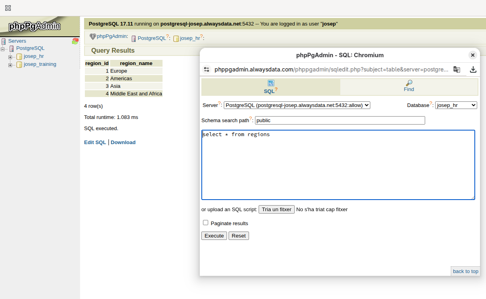
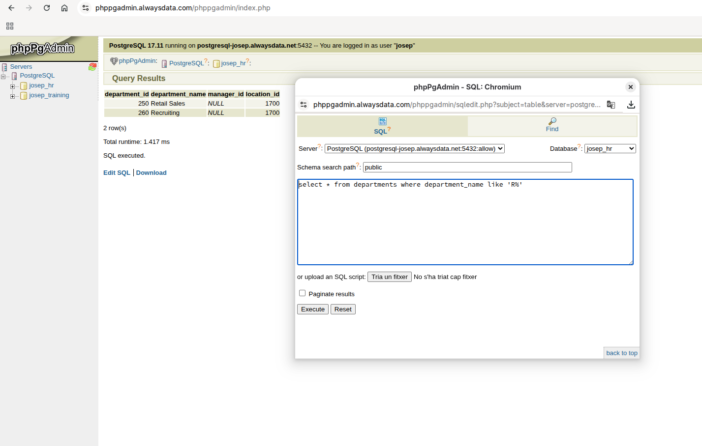
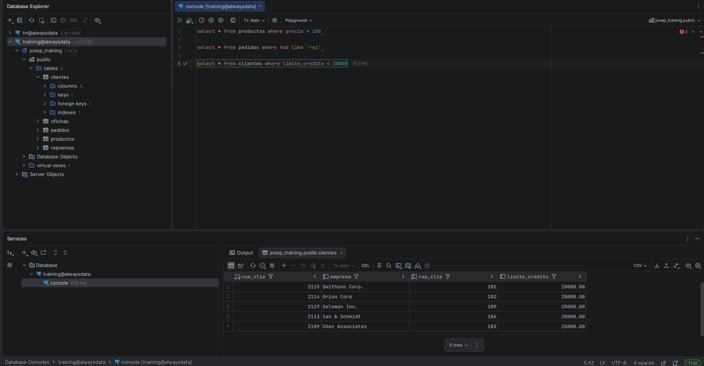
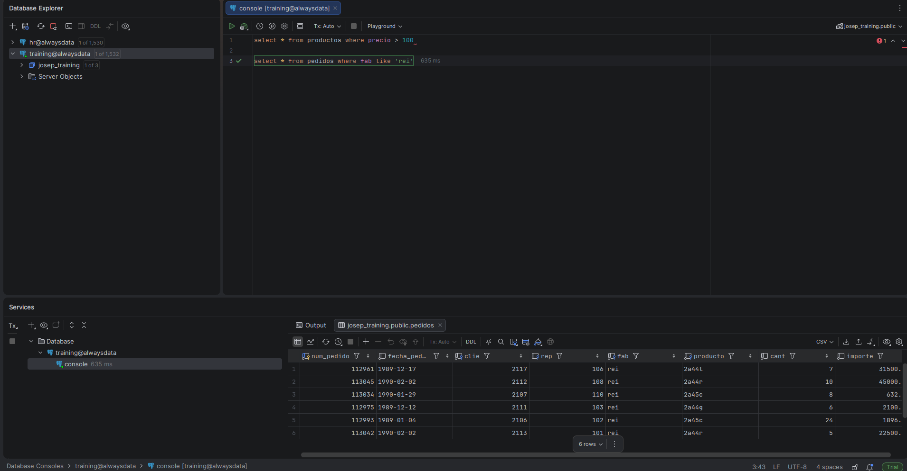

Resum
PostgreSQL al núvol
Vam crear dues bases de dades a Alwaysdata, vam importar els conjunts hr i training, vam configurar usuaris amb permisos diferents i vam connectar les bases a DataGrip.
Administració
Creació de bases, importació SQL i gestió d'usuaris.
Consulta i disseny
Consultes, connexions remotes i diagrames entitat-relació.
Aprenentatges
Què hem après
- Administrar PostgreSQL en un servei cloud.
- Importar estructures i dades des d'un fitxer SQL.
- Crear usuaris i limitar-ne els permisos.
- Configurar connexions a phpPgAdmin i DataGrip.
- Filtrar dades amb diferents condicions SQL.
- Generar diagrames de les bases de dades.
Activitats
Treball realitzat
Preparació de l'entorn
Vam registrar un compte gratuït, vam crear les bases hr i training, vam importar els fitxers SQL i vam crear un segon usuari amb accés únicament a training.
Consultes SQL
| Base de dades | Pregunta | Resposta |
|---|---|---|
hr | Veure totes les regions | SELECT * FROM regions; |
training | Veure tots els productes | SELECT * FROM productos; |
hr | Mostrar els països | SELECT country_name FROM countries; |
hr | Departaments que comencen per R | SELECT * FROM departments WHERE department_name LIKE 'R%'; |
hr | Departaments sense mànager | SELECT department_name FROM departments WHERE manager_id IS NULL; |
hr | Departaments amb mànager | SELECT department_name FROM departments WHERE manager_id IS NOT NULL; |
training | Productes amb preu superior a 100 | SELECT * FROM productos WHERE precio > 100; |
training | Comandes amb el codi de fabricant rei | SELECT * FROM pedidos WHERE fab LIKE 'rei'; |
training | Clients amb límit inferior a 30.000 | SELECT * FROM clientes WHERE limite_credito < 30000; |
DataGrip i diagrames
Vam configurar una connexió per a cada base de dades i vam generar els diagrames entitat-relació per visualitzar les taules i les seves relacions.
Contingut gràfic
Captures de les activitats



